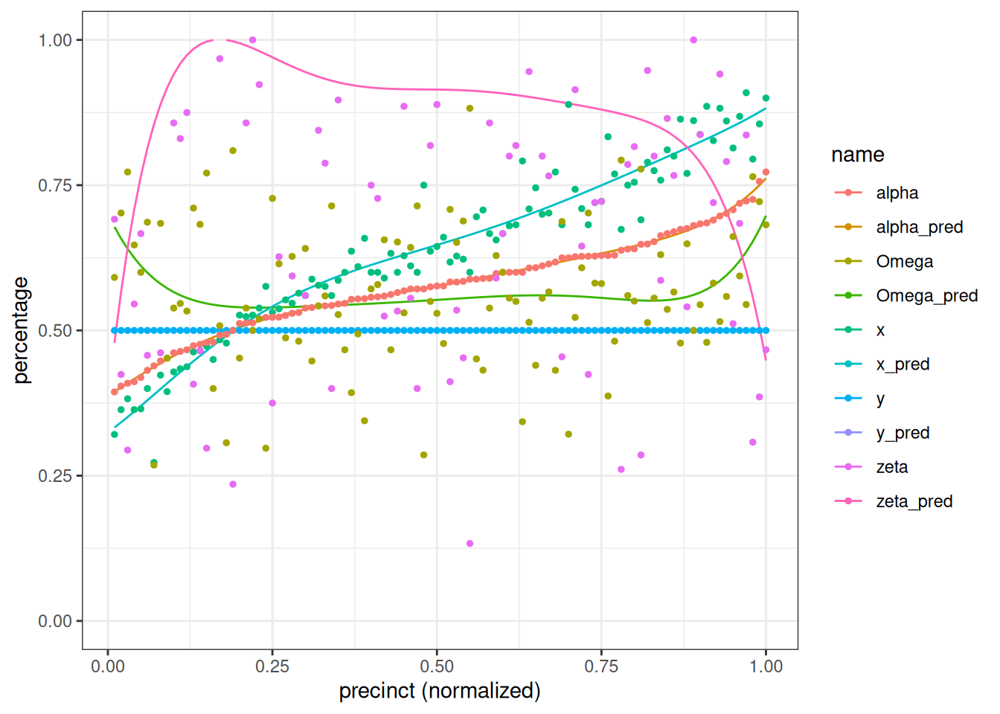
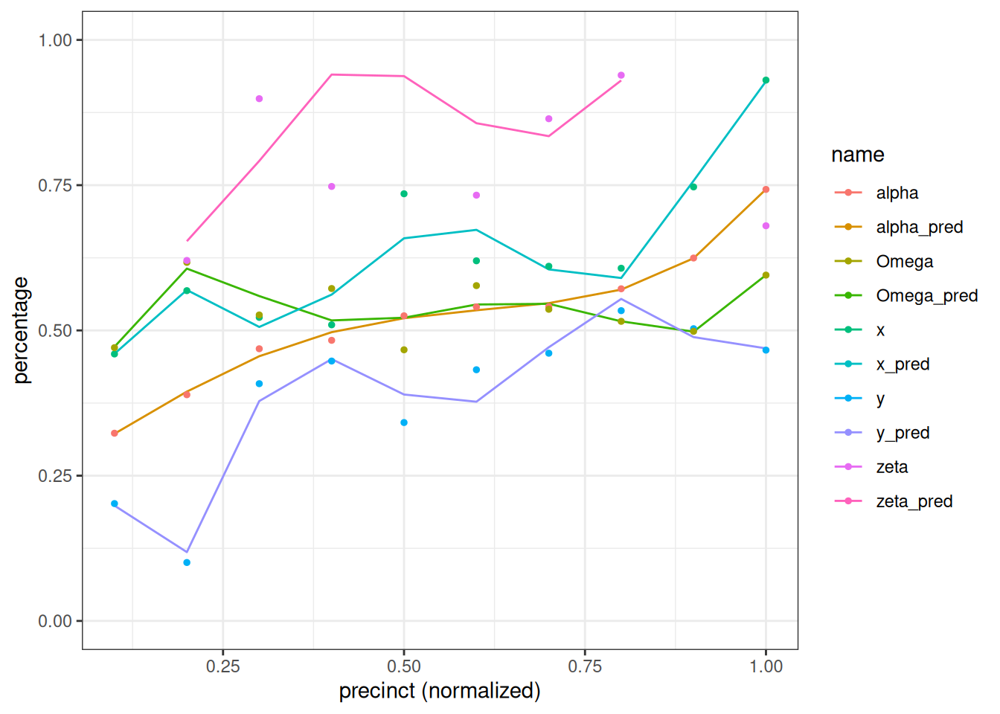
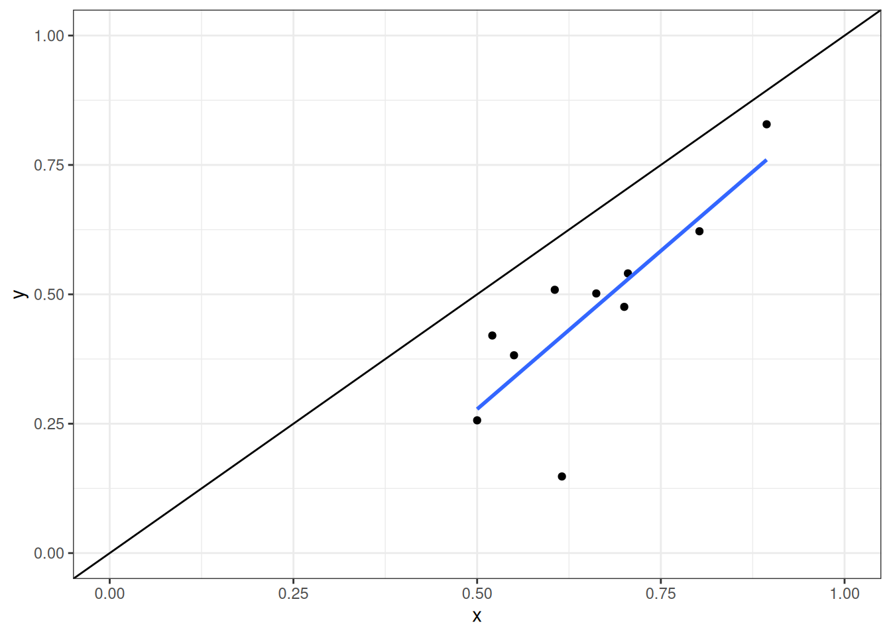
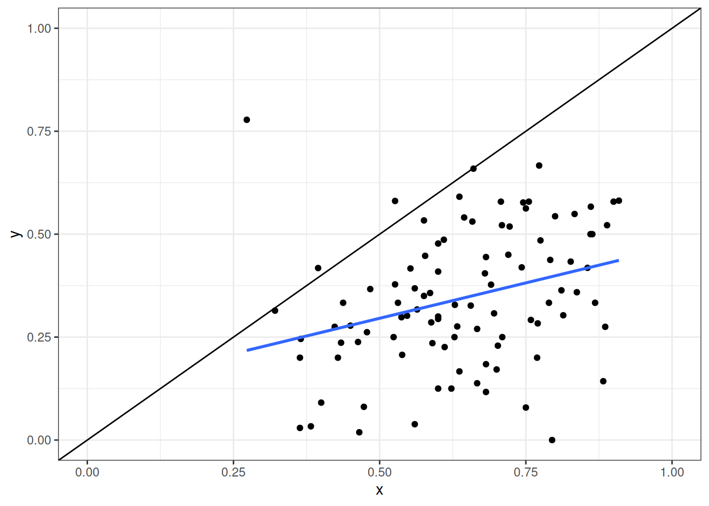
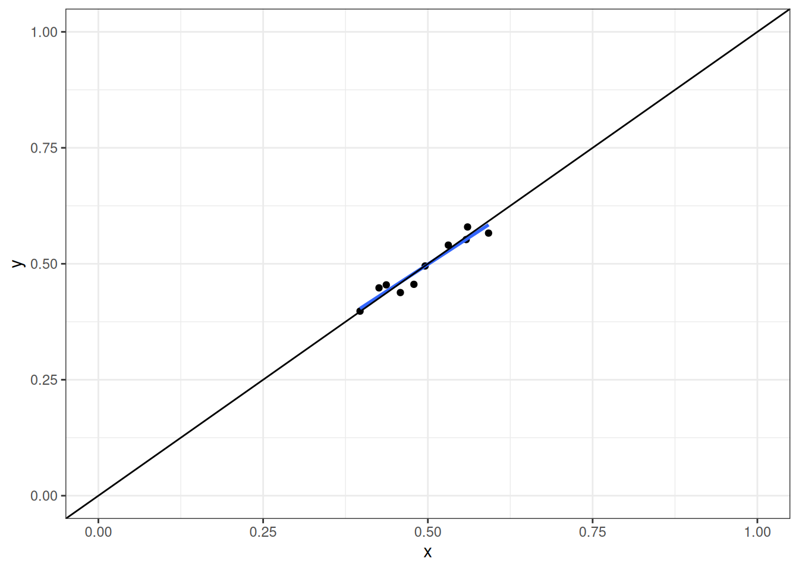
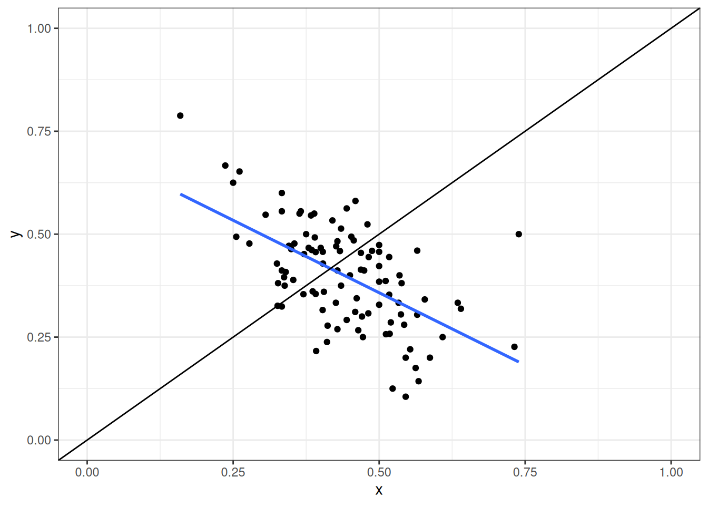
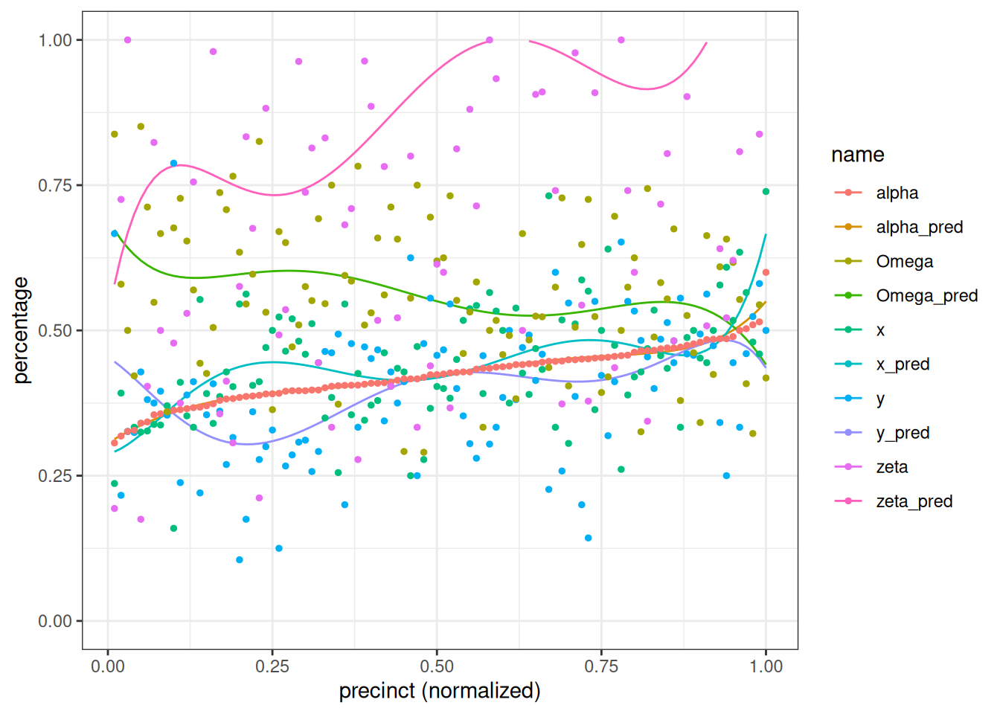
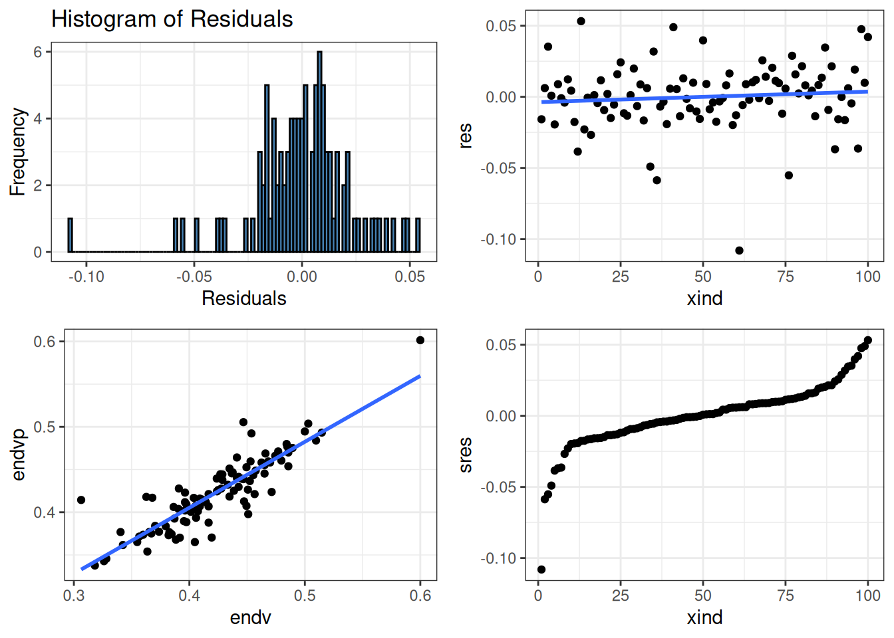
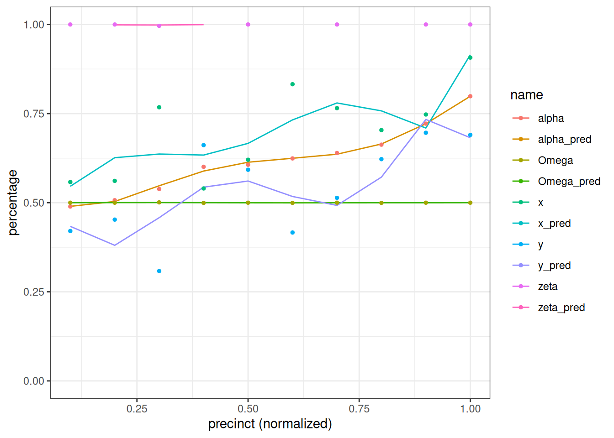
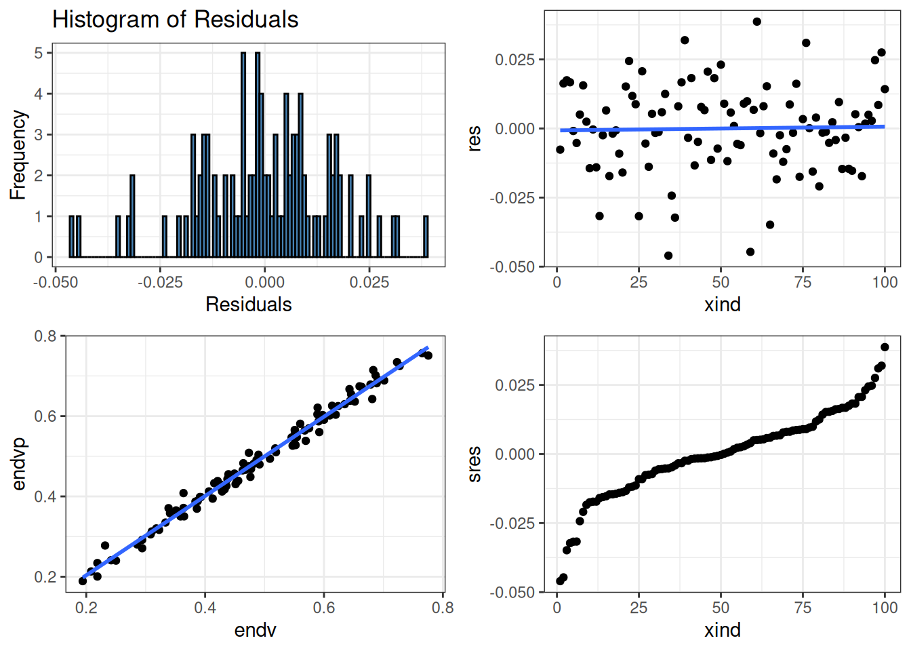

| County_1 | County_2 | County_3 |
| 60/40 | 60/40 | 60/40 |
| 40/60 | 40/60 | 40/60 |
| 40/60 | 40/60 | |
| 40/60 |
Abstract
Abstract goes here
1 Introduction
Ed. Solomon
“At the very core of this article lay the assumption of Causality, that the Effect cannot precede the Cause; likewise, the Aggregate Percentage of a Candidate cannot precede the Election Day and the Mail-in Percentages of that candidate.
1.1 Setting up the election system
- Two candidates: A, B
- County with three precincts: 1, 2, 3
- Two modes of voting
- Number of ballots mode 1: S, T
- Number of ballots mode 2: U, V
1.2
Our two stylized numerical example
Case 1
Case 2
| County_1 | County_2 | County_3 |
| 60/40 | 60/40 | 60/40 |
| 40/60 | 40/60 | 40/60 |
| 35/65 | 35/65 | |
| 30/70 |
1.3 Parametric tautologies in an election using standard form (north vs. south)
| S | T |
| V | U |
Parameters:\(x\), \(y\), \(\zeta\), \(\alpha\), \(\lambda\)
\[\begin{equation*} x=\frac{S}{S + T} \text{, }y=\frac{U}{U + V} \end{equation*}\] \[\begin{equation*} \zeta=\frac{U + V}{S + T} \end{equation*}\] \[\begin{equation*} \alpha=\frac{S + U}{S + T + U + V}=\frac{x + y \zeta}{\zeta + 1} \end{equation*}\] \[\begin{equation*} \lambda=\frac{S + V}{S + T + U + V}=\frac{x + \zeta \left(1 - y\right)}{\zeta + 1} \end{equation*}\]
1.4
| P | S | T | U | V | x | y | zeta | alpha | lamda |
|---|---|---|---|---|---|---|---|---|---|
| 1 | 60 | 40 | 40 | 60 | 0.6 | 0.4 | 1 | 0.5000 | 0.6 |
| 2 | 60 | 40 | 80 | 120 | 0.6 | 0.4 | 2 | 0.4667 | 0.6 |
| 3 | 60 | 40 | 120 | 180 | 0.6 | 0.4 | 3 | 0.4500 | 0.6 |
Numerical calculation of candidate one total percentage
- Precinct 1
- \(\alpha=\frac{0.6+0.4\cdot 1}{1+1}=0.5\)
- Precinct 2
- \(\alpha=\frac{0.6+0.4\cdot 1}{1+1}=0.5\)
- Precinct 3
- \(\alpha=\frac{0.6+0.4\cdot 1}{1+1}=0.5\)
1.5 Parametric tautologies in an election using hybrid form (west vs. east)
| S | U |
| T | V |
Parameters: \(g\), \(h\), \(\Gamma\), \(\alpha\), \(\Omega\) \[\begin{equation*} g=\frac{S}{S + V} \text{, } h=\frac{U}{T + U} \end{equation*}\] \[\begin{equation*} \Gamma=\frac{T + U}{S + V} \end{equation*}\] \[\begin{equation*} \alpha=\frac{S + U}{S + T + U + V}=\frac{\Gamma h + g}{\Gamma + 1} \end{equation*}\] \[\begin{equation*} \Omega=\frac{S + T}{S + T + U + V}=\frac{\Gamma \left(1 - g\right) + g}{\Gamma + 1} \end{equation*}\]
1.6
| P | S | T | U | V | g | h | Gamma | alpha | Omega |
|---|---|---|---|---|---|---|---|---|---|
| 1 | 60 | 40 | 40 | 60 | 0.5000 | 0.5000 | 0.6667 | 0.5000 | 0.5000 |
| 2 | 60 | 40 | 80 | 120 | 0.3333 | 0.6667 | 0.6667 | 0.4667 | 0.3333 |
| 3 | 60 | 40 | 120 | 180 | 0.2500 | 0.7500 | 0.6667 | 0.4500 | 0.2500 |
Numerical calculation of candidate one total percentage
- Precinct 1
- \(\alpha=\frac{0.5+0.4\cdot 0.67}{1+0.67}=0.5\)
- Precinct 2
- \(\alpha=\frac{0.5+0.4\cdot 0.67}{1+0.67}=0.5\)
- Precinct 3
- \(\alpha=\frac{0.5+0.4\cdot 0.67}{1+0.67}=0.5\)
| P | S | T | U | V | g | h | Gamma | alpha | Omega |
|---|---|---|---|---|---|---|---|---|---|
| 1 | 60 | 40 | 40 | 60 | 0.5000 | 0.5000 | 0.6667 | 0.5000 | 0.5000 |
| 2 | 60 | 40 | 75 | 125 | 0.3243 | 0.6522 | 0.6216 | 0.4500 | 0.3333 |
| 3 | 60 | 40 | 105 | 195 | 0.2353 | 0.7241 | 0.5686 | 0.4125 | 0.2500 |
1.7 Parametric tautologies in an election using opposition form (upper diagonal vs. lower diagonal)
| S | U |
| T | V |
Parameters: \(m\), \(n\), \(\xi\), \(\lambda\), \(\Omega\) \[\begin{equation*} n=\frac{S}{S + U} \text{ , } m=\frac{T}{T + V} \end{equation*}\] \[\begin{equation*} \xi=\frac{T + V}{S + U} \end{equation*}\] \[\begin{equation*} \Omega=\frac{S + T}{S + T + U + V}=\frac{m + n \xi}{\xi + 1} \end{equation*}\] \[\begin{equation*} \lambda=\frac{S + V}{S + T + U + V}=\frac{\Gamma}{\Gamma + 1} \end{equation*}\]
1.8
| P | S | T | U | V | n | m | xi | Omega | lamda |
|---|---|---|---|---|---|---|---|---|---|
| 1 | 60 | 40 | 40 | 60 | 0.6000 | 0.4000 | 1.000 | 0.5000 | 0.6 |
| 2 | 60 | 40 | 80 | 120 | 0.4286 | 0.2500 | 1.143 | 0.3333 | 0.6 |
| 3 | 60 | 40 | 120 | 180 | 0.3333 | 0.1818 | 1.222 | 0.2500 | 0.6 |
1.9 Modelling the election process
- Step 1: Each registered voter assign themself (independent of voting technology) to either candidate A or candidate B
- Step 2: Voting technology realized
- Step 3: Registered voters determine whether to vote or not to vote
- Step 4: If voting, do this by either mode 1 or by mode 2.
flowchart LR A[Candidate A or B] --> R[A] R --> RV[Vote] RV --> RVE[Non-Mail] RV --> RVM[Mail] R --> RN[Not Vote] DV --> DVE[Non-Mail] DV --> DVM[Mail] A --> D[B] D --> DV[Vote] D --> Dn[Not Vote]
1.10
- Probability of assigning oneself to candidate A in precinct \(i\)
- \(p_{w,i} \sim N(\alpha_i,\sigma^2_{w,i})\)
- Voting technology
- \(z_i \sim U(0,1)\)
- Probability of not voting in precinct \(i\)
- Candidate A, \(p_{nz,a,i}=(1-z_i)p_{n,a,i}\sim N(\alpha_{a,n},\sigma^2_{a,n})\)
- Candidate B, \(p_{nz,b,i}=(1-z_i)p_{n,b,i}\sim N(\alpha_{b,n},\sigma^2_{b,n})\)
- Candidate A, \(p_{nz,a,i}=(1-z_i)p_{n,a,i}\sim N(\alpha_{a,n},\sigma^2_{a,n})\)
- Probability of voting by mode 2 in precinct \(i\)
- Candidate A, \(p_{m2,a,i}=(1-p_{nv,a,i})p_{a,mv}\sim N(\alpha_{a,mv},\sigma^2_{a,mv})\)
- Candidate B, \(p_{m2,b,i}=(1-p_{nv,b,i})p_{b,mv}\sim N(\alpha_{a,mv},\sigma^2_{a,mv})\)
- Probability of voting by mode 1 in precinct \(i\)
- Candidate A, \(p_{m1,a,i}=1-p_{m2,a,i}-p_{nz,a,i}\)
- Candidate B, \(p_{m1,b,i}=1-p_{m2,b,i}-p_{nz,b,i}\)
Neutral-voting assumption:
- Decission to vote or not to vote is independent of voting preferences:
- \(p_{nz,a,i}=p_{nz,a,i}\)
- If voting, decission to vote by mode 1 or by mode 2 independent of voting preferences:
- \(p_{m2,a,i}=p_{m2,a,i}\)
Note: As we will investigate later, this condition might be needed in order to restore a rigged election to its original form.
1.11 How exogenous factors that influence the voting system will make changes to the election outcome through \(\zeta_i\)
- Differences in the cost of voting (e.g., topology, voting rules, dropboxes etc.) across precincts \(\Rightarrow\)
- Changes to the likelihood of voting \(\Rightarrow\)
- Simplify so that changes in the likelihood of voting only impact Mode 2 \(\Rightarrow\)
- Higher \(\zeta_i\) \(\Rightarrow\)
- Which changes the total election outcome through \(\alpha_i=\frac{x_i+\zeta_i y_i}{\zeta_i+x_i}\)
1.12
The impact on the election outcome, however, would be small or close to non-existens if the conditions of the existance of a trivial Manifold occuranse related to normal form are not satisfied:
- Proportion of mail-in-votes to election day vote is already high (Aggregate convergence lemma)
- Note: \(\lim_{\zeta_i \rightarrow \infty} \alpha_i=\frac{x_i+\zeta_i y_i}{\zeta_i+x_i}=y_i\)
- Correlation between \(x\) and \(y\) is very high (Twixt lemma)
- Note: If correlation is 1, we can set \(x_i=\rho_s y_i\) so that \(\alpha_i(y_i,\zeta_i)=\frac{\rho_s y_i+\zeta_i y_i}{\zeta_i+x_i}\)
- Low variance to \(\zeta\)
- Note: Invariance across precincts would imply that \(\zeta_i=\zeta\), so that election outcome only determined by variations in two parameters: \(\alpha_i(y_i,x_i)=\frac{x_i+\zeta y_i}{\zeta+x_i}\)
If none of this three cases are satisfied, variation in \(\zeta_i\) should explain part of the election result. But how much should we expect within a county (2%, 5%, 10%)?
1.13 How exogenous factors that influence the voting system will make changes to the election outcome through \(\Gamma_i\)
- Differenc in the cost of voting (e.g., topology, voting rules, dropboxes, socio economics etc.) across precincts \(\Rightarrow\)
- Make changes to the likelihood of voting \(\Rightarrow\)
- Simplify so that changes in the likelihood of voting only impact mode 2 \(\Rightarrow\)
- Higher \(\zeta_i\) \(\Rightarrow\)
- If new and earlier sample not representative of each other, higher \(\Gamma_i\) \(\Rightarrow\)
- Which changes the total election outcome through \(\alpha_i=\frac{g_i+\zeta_i h_i}{\zeta_i+1}\)
1.14
The impact on the election outcome, however, would be small or close to non-existens if the conditions of the existance of a trivial Manifold related to opposition form are not satisfied:
- Proportion of the hybrid ballot boxes is already high (Aggregate convergence lemma)
- Note: \(\lim_{\Gamma_i \rightarrow \infty} \alpha_i=\frac{g_i+\zeta_i h_i}{\zeta_i+g_i}=y_i\)
- Correlation between \(g\) and \(h\) is very high (Twixt lemma)
- Note: If correlation is 1, we can set \(g_i=\rho_h h_i\) so that \(\alpha_i(h_i,\Gamma_i)=\frac{\rho_h h_i+\Gamma_i h_i}{\Gamma_i+x_i}\)
- Low variance to \(\Gamma_i\)
- Note: Invariance across precincts would imply that \(\Gamma_i=\Gamma\), so that election outcome only determined by variations in two parameters: \(\alpha_i=\frac{g_i+\Gamma h_i}{h_i}\)
If none of this three cases are satisfied, variation in \(\Gamma_i\) should explain part of the election result. But how much should we expect within a county (2%, 5%, 10%)?
2 Overview of various methods of ballot counting
2.1 Generic approach to ballot counting
- We have identified three ways of counting
- Standard form ( \(x\), \(y\), \(\zeta\), \(\alpha\), \(\lambda\) )
- Hybrid form ( \(g\), \(h\), \(\alpha\), \(\Gamma\), \(\Omega\) )
- Opposition form ( \(n\), \(m\), \(\xi\), \(\Omega\), \(\lambda\) )
- Each form can (throught its parametric tautologies) determine the 5 parameters that have been listed.
- We are free to predetermine 3 of them
- The remaining 2 must be backsolved, this based on information from the first three parameters.
- Selecting 3 parameters from a set of 5 implies 10 different combinations
2.2 Definitions (20 laws and 40 isometries)
Caution
20 laws and 40 isometris
Warning in kable_styling(kable_input, "none", htmltable_class = light_class, :
Please specify format in kable. kableExtra can customize either HTML or LaTeX
outputs. See https://haozhu233.github.io/kableExtra/ for details.Warning in kableExtra::kable_styling(., font_size = 8): Please specify format
in kable. kableExtra can customize either HTML or LaTeX outputs. See
https://haozhu233.github.io/kableExtra/ for details.| Law_Number | North_vs_South | West_vs_East | Diagonal_vs_Diagonal |
|---|---|---|---|
| First Law | \(x_{1}=\alpha_{1}+\zeta(\alpha_{1}-y_{1})\) | \(g_{1}=\alpha_{1}+\gamma(\alpha_{1}-h_{1})\) | \(m_{1}=\Omega_{1}+\xi(\Omega_{1}-n_{1})\) |
| Second Law | \(x_{1}=\lambda_{1}+\zeta(\lambda_{1}-y_{2})\) | \(g_{1}=\Omega_{1}+\gamma(\Omega_{1}-h_{2})\) | \(m_{1}=\lambda_{1}+\xi(\lambda_{1}-n_{2})\) |
| Third Law | \(x_{1}=\frac{\alpha_{1}y_{2}-\lambda_{1}y_{1}}{(\alpha_{1}-\lambda_{1})-(y_{1}-y_{2})}\) | \(g_{1}=\frac{\alpha_{1}h_{2}-\Omega_{1}h_{1}}{(\alpha_{1}-\Omega_{1})-(h_{1}-h_{2})}\) | \(m_{1}=\frac{\Omega_{1}n_{2}-\lambda_{1}n_{1}}{(\Omega_{1}-\lambda_{1})-(n_{1}-n_{2})}\) |
| Fourth Law | \(x_{1}=\frac{\lambda_{1}+\alpha_{1}-\Omega_{2}}{2\Omega_{1}}\) | \(g_{1}=\frac{\Omega_{1}+\alpha_{1}-\lambda_{2}}{2\lambda_{1}}\) | \(m_{1}=\frac{\lambda_{1}+\Omega_{1}-\alpha_{2}}{2\alpha_{1}}\) |
| Fifth Law | \(y_{1}=\alpha_{1}-\zeta^{-1}(\alpha_{1}-x_{1})\) | \(h_{1}=\alpha_{1}-\gamma^{-1}(\alpha_{1}-g_{1})\) | \(n_{1}=\Omega_{1}-\xi^{-1}(\Omega_{1}-m_{1})\) |
| Sixth Law | \(y_{1}=\lambda_{2}-\zeta^{-1}(\lambda_{1}-x_{1})\) | \(h_{1}=\Omega_{2}-\gamma^{-1}(\Omega_{1}-g_{1})\) | \(n_{1}=\lambda_{2}-\xi^{-1}(\lambda_{1}-m_{1})\) |
| Seventh Law | \(y_{1}=\frac{x_{1}\lambda_{2}-x_{2}\alpha_{1}}{(\lambda_{2}-\alpha_{1})-(x_{2}-x_{1})}\) | \(h_{1}=\frac{g_{1}\Omega_{2}-g_{2}\alpha_{1}}{(\Omega_{2}-\alpha_{1})-(g_{2}-g_{1})}\) | \(n_{1}=\frac{m_{1}\lambda_{2}-m_{2}\Omega_{1}}{(\lambda_{2}-\Omega_{1})-(m_{2}-m_{1})}\) |
| Eighth Law | \(y_{1}=\frac{\lambda_{2}+\alpha_{1}-\Omega_{1}}{2\Omega_{2}}\) | \(h_{1}=\frac{\Omega_{2}+\alpha_{1}-\lambda_{1}}{2\lambda_{2}}\) | \(n_{1}=\frac{\lambda_{2}+\Omega_{1}-\alpha_{1}}{2\alpha_{2}}\) |
| Ninth Law | \(\alpha_{1}=x_{1}\Omega_{1}+\Omega_{2}y_{1}\) | \(\alpha_{1}=g_{1}\lambda_{1}+\lambda_{2}h_{1}\) | \(\Omega_{1}=m_{1}\alpha_{1}+\alpha_{2}n_{1}\) |
| Tenth Law | \(\alpha_{1}=\Omega_{1}(x_{1}-x_{2})+\lambda_{2}\) | \(\alpha_{1}=\lambda_{1}(g_{1}-g_{2})+\Omega_{2}\) | \(\Omega_{1}=\alpha_{1}(m_{1}-m_{2})+\lambda_{2}\) |
| Eleventh Law | \(\alpha_{1}=\Omega_{2}(y_{1}-y_{2})+\lambda_{1}\) | \(\alpha_{1}=\lambda_{2}(h_{1}-h_{2})+\Omega_{1}\) | \(\Omega_{1}=\alpha_{2}(n_{1}-n_{2})+\lambda_{1}\) |
| Twelfth Law | \(\alpha_{1}=\frac{x_{1}(y_{2}-y_{1})-\lambda_{1}(x_{1}-y_{1})}{y_{2}-x_{1}}\) | \(\alpha_{1}=\frac{g_{1}(h_{2}-h_{1})-\Omega_{1}(g_{1}-h_{1})}{h_{2}-g_{1}}\) | \(\Omega_{1}=\frac{m_{1}(n_{2}-n_{1})-\lambda_{1}(m_{1}-n_{1})}{n_{2}-m_{1}}\) |
| Thirteenth Law | \(\lambda_{1}=x_{1}\Omega_{1}+\Omega_{2}y_{2}\) | \(\Omega_{1}=g_{1}\lambda_{1}+\lambda_{2}h_{2}\) | \(\lambda_{1}=m_{1}\alpha_{1}+\alpha_{2}n_{2}\) |
| Fourteenth Law | \(\lambda_{1}=\Omega_{1}(x_{1}-x_{2})+\alpha_{2}\) | \(\Omega_{1}=\lambda_{1}(g_{1}-g_{2})+\alpha_{2}\) | \(\lambda_{1}=\alpha_{1}(m_{1}-m_{2})+\Omega_{2}\) |
| Fifteenth Law | \(\lambda_{1}=\frac{\alpha_{1}(x_{1}-y_{2})-x_{1}(y_{1}-y_{2})}{x_{1}-y_{1}}\) | \(\Omega_{1}=\frac{\alpha_{1}(g_{1}-h_{2})-g_{1}(h_{1}-h_{2})}{g_{1}-h_{1}}\) | \(\lambda_{1}=\frac{\Omega_{1}(m_{1}-n_{2})-m_{1}(n_{1}-n_{2})}{m_{1}-n_{1}}\) |
| Sixteenth Law | \(\lambda_{1}=\Omega_{2}(y_{2}-y_{1})+\alpha_{1}\) | \(\Omega_{1}=\lambda_{2}(h_{2}-h_{1})+\alpha_{1}\) | \(\lambda_{1}=\alpha_{2}(n_{2}-n_{1})+\Omega_{1}\) |
| Seventeenth Law | \(\zeta=\frac{x_{1}-\alpha_{1}}{\alpha_{1}-y_{1}};\Omega_{1}=\frac{y_{1}-\alpha_{1}}{y_{1}-x_{1}}\) | \(\gamma=\frac{g_{1}-\alpha_{1}}{\alpha_{1}-h_{1}};\lambda_{1}=\frac{h_{1}-\alpha_{1}}{h_{1}-g_{1}}\) | \(\xi=\frac{m_{1}-\Omega_{1}}{\Omega_{1}-n_{1}};\alpha_{1}=\frac{n_{1}-\Omega_{1}}{n_{1}-m_{1}}\) |
| Eighteenth Law | \(\Omega_{1}=\frac{\lambda_{2}-\alpha_{1}}{x_{2}-x_{1}}=\frac{\alpha_{2}-\lambda_{1}}{x_{2}-x_{1}}\) | \(\gamma_{1}=\frac{\Omega_{2}-\alpha_{1}}{g_{2}-g_{1}}=\frac{\alpha_{2}-\Omega_{1}}{g_{2}-g_{1}}\) | \(\alpha_{1}=\frac{\lambda_{2}-\Omega_{1}}{m_{2}-m_{1}}=\frac{\Omega_{2}-\lambda_{1}}{m_{2}-m_{1}}\) |
| Nineteenth Law | \(\zeta=\frac{x_{1}-\lambda_{1}}{\lambda_{1}-y_{2}}; \Omega_{1}=\frac{y_{2}-\lambda_{1}}{y_{2}-x_{1}}\) | \(\gamma=\frac{g_{1}-\Omega_{1}}{\Omega_{1}-h_{2}}; \lambda_{1}=\frac{h_{2}-\Omega_{1}}{h_{2}-g_{1}}\) | \(\xi=\frac{m_{1}-\lambda_{1}}{\lambda_{1}-n_{2}}; \alpha_{1}=\frac{n_{2}-\lambda_{1}}{n_{2}-m_{1}}\) |
| Twentieth Law | \(\zeta=\frac{\lambda_{1}-\alpha_{1}}{(y_{2}-y_{1})+(\alpha_{1}-\lambda_{1})}\) | \(\gamma=\frac{\Omega_{1}-\alpha_{1}}{(h_{2}-h_{1})+(\alpha_{1}-\Omega_{1})}\) | \(\xi=\frac{\lambda_{1}-\Omega_{1}}{(n_{2}-n_{1})+(\Omega_{1}-\lambda_{1})}\) |
Proportions
Warning in kable_styling(kable_input, "none", htmltable_class = light_class, :
Please specify format in kable. kableExtra can customize either HTML or LaTeX
outputs. See https://haozhu233.github.io/kableExtra/ for details.Warning in kableExtra::kable_styling(., font_size = 8): Please specify format
in kable. kableExtra can customize either HTML or LaTeX outputs. See
https://haozhu233.github.io/kableExtra/ for details.| V1 | V2 | V3 | V4 |
|---|---|---|---|
| North Ratio | South Ratio | North Complement | South Complement |
| \(x_{1} = \frac{s}{s+t}\) | \(y_{1} = \frac{u}{u+v}\) | \(x_{2} = (1-x_{1}) = \frac{t}{s+t}\) | \(y_{2} = (1-y_{1}) = \frac{v}{u+v}\) |
| West Ratio | East Ratio | West Complement | East Complement |
| \(g_{1} = \frac{s}{s+v}\) | \(h_{1} = \frac{u}{u+t}\) | \(g_{2} = (1-g_{1}) = \frac{v}{s+v}\) | \(h_{2} = (1-h_{1}) = \frac{t}{u+t}\) |
| Northwest Ratio | Northeast Ratio | Southeast Ratio | Southwest Ratio |
| \(m_{1} = \frac{s}{s+u}\) | \(n_{1} = \frac{t}{t+v}\) | \(m_{2} = (1-m_{1}) = \frac{u}{s+u}\) | \(n_{2} = (1-n_{1}) = \frac{v}{t+v}\) |
| Diagonal Aggregate | Diagonal Proportion | 1st Alpha Identity | Xi Identity |
| \(\alpha_{1} = \frac{s+u}{(s+u)+(t+v)}\) | \(\xi = \frac{t+v}{s+u}\) | \(\alpha_{1} = (\xi+1)^{-1}\) | \(\xi = \frac{1-\alpha_{1}}{\alpha_{1}} = \frac{\alpha_{2}}{\alpha_{1}}\) |
| Diagonal Complement | Diagonal Inverse | 2nd Alpha Identity | Inverse Xi Identity |
| \(\alpha_{2} = \frac{t+v}{(s+u)+(t+v)}\) | \(\xi^{-1} = \frac{s+u}{t+v}\) | \(\alpha_{2} = (\xi^{-1}+1)^{-1}\) | \(\xi^{-1} = \frac{1-\alpha_{2}}{\alpha_{2}} = \frac{\alpha_{1}}{\alpha_{2}}\) |
| West Aggregate | East to West Proportion | 1st Lambda Identity | Gamma Identity |
| \(\lambda_{1} = \frac{s+v}{(s+v)+(u+t)}\) | \(\gamma = \frac{u+t}{s+v}\) | \(\lambda_{1} = (\gamma+1)^{-1}\) | \(\gamma = \frac{1-\lambda_{1}}{\lambda_{1}} = \frac{\lambda_{2}}{\lambda_{1}}\) |
| East Aggregate | West to East Proportion | 2nd Lambda Identity | Inverse Gamma Identity |
| \(\lambda_{2} = \frac{u+t}{(s+v)+(u+t)}\) | \(\gamma^{-1} = \frac{s+v}{u+t}\) | \(\lambda_{2} = (\gamma^{-1}+1)^{-1}\) | \(\gamma^{-1} = \frac{1-\lambda_{2}}{\lambda_{2}} = \frac{\lambda_{1}}{\lambda_{2}}\) |
| North Aggregate | South to North Proportion | 1st Omega Identity | Zeta Identity |
| \(\Omega_{1} = \frac{s+t}{(s+t)+(u+v)}\) | \(\zeta = \frac{u+v}{s+t}\) | \(\Omega_{1} = (\zeta+1)^{-1}\) | \(\zeta = \frac{1-\Omega_{1}}{\Omega_{1}} = \frac{\Omega_{2}}{\Omega_{1}}\) |
| South Aggregate | North to South Proportion | 2nd Omega Identity | Inverse Zeta Identity |
| \(\Omega_{2} = \frac{u+v}{(s+t)+(u+v)}\) | \(\zeta^{-1} = \frac{s+t}{u+v}\) | \(\Omega_{2} = (\zeta^{-1}+1)^{-1}\) | \(\zeta^{-1} = \frac{1-\Omega_{2}}{\Omega_{2}} = \frac{\Omega_{1}}{\Omega_{2}}\) |
2.3 Counting in a fair election
Standard form
Setting the first three parameters:
- \(x_i=\frac{s_i}{s_i+t_i}\)
- \(y_i=\frac{u_i}{u_i+v_i}\)
- \(\zeta_i=\frac{u_i+v_i}{s_i+t_i}\)
Backsolve for
- \(\alpha_i(x_,y_i,\zeta_i)=\frac{x_i+\zeta_i\cdot y_i}{\zeta_i+1}\)
- \(\lambda_i(x_i,y_i,\zeta_i)=\frac{x_i\zeta_i\cdot(1-y_i)}{\zeta_i+1}\)
Opposition form
Setting the first three parameters:
- \(g_i=\frac{s_i}{s_i+t_i}\)
- \(h_i=\frac{u_i}{u_i+v_i}\)
- \(\Gamma_i=\frac{u_i+d_i}{u_i+v_i}\)
Backsolve for
- \(\alpha_i(g_i,h_i,\Gamma_i)=\frac{x_i+\zeta_i\cdot y_i}{\zeta_i+1}\)
- \(\Omega_i(g_i,h_i,\Gamma_i)=\frac{x_i\zeta_i\cdot(1-y_i)}{\zeta_i+1}\)
Properties:
- 1st The total election outcome will be determined by three parameters: ( \(x_i, y_i,\zeta_i\) ) under standard form and ( \(g_i, h_i, \Gamma_i\) ) using hybrid form.
- 2nd Changes in \(\Gamma_i\) and \(\zeta_i\) would in general have an impact on \(\alpha_i\).
2.4 Counting in a rigged election
Setting the prefered election outcome
Non-rigged election using standard form ::: {.cell}
app_n_out[[4]] Warning: Removed 41 rows containing missing values (`geom_line()`).Warning: Removed 40 rows containing missing values (`geom_point()`).
Rigged election using standard form ::: {.cell}
app_ex1_out[[4]] Warning: Removed 37 rows containing missing values (`geom_line()`).Warning: Removed 41 rows containing missing values (`geom_point()`).
:::
::::
Normal
\[\begin{equation*}
f(x)_{0}^{1}=0.26 + 1.82*x - 13.632*x^2 + 105.569*x^3 - 502.639*x^4 + 1388.776*x^5 - 2262.2*x^6 + 2152.533*x^7 - 1109.462*x^8 + 239.791*x^9$
\end{equation*}\]
Election outome ::: {.cell} ::: {.cell-output .cell-output-stdout}
[1] 0.493254::: :::
Rigged
\(f(x)_{0}^{1}=0.19 + 1.82*x - 13.632*x^2 + 105.569*x^3 - 502.639*x^4 + 1388.776*x^5 - 2262.2*x^6 + 2152.533*x^7 - 1109.462*x^8 + 239.791*x^9\)
Election outome ::: {.cell} ::: {.cell-output .cell-output-stdout}
[1] 0.493254::: :::
2.4.1 Rigged election example 1: applying normal form
- Setting for eaching precinct the first three parameters
- \(\alpha_i=<...>\) (i.e., equal to the prefered election outcome)
- \(x_i=\frac{a_i}{a_i+b_i}\) (true observations)
- \(y_i=\overset{\text{Manifold equation}}{\overbrace{\overset{}{M(x_i,\alpha_i,\underset{\text{outside information}}{...})}}}+\epsilon_t \text{ where } \epsilon_t \sim N(0,\sigma^2)\)
- Backsolve for
- \(\zeta_i(x_i,\alpha_i,y_i)=\frac{x_i-\alpha_i}{\alpha_i-y_i}\)
- \(\lambda_i(x_i,\zeta_i,y_i)=\frac{x_i-\zeta_i (1-y_i)}{\zeta_i+1}\)
Properties:
- 3rd \(y_i\) can now be determined by two equations
- Tautology (must hold)
- Manifold equation + error term (white noise)
- 4th. Changes in \(\zeta_i\) - and as a corrollary \(\Omega_i\) - is now
- Solely caused by the error term \(\epsilon_i\) and, if used, the non-linear part of the Manifold equation.
- Has no longer any causal impact on \(\alpha_i\)
2.4.2 Rigged election example 2: applying hybrid form
- Setting for eaching precinct the first three parameters
- \(\alpha_i=<...>\) (i.e., equal to the prefered election outcome)
- \(h_i=\frac{s_i}{s_i+v_i}\) (true observations)
- \(g_i=\overset{\text{Manifold equation}}{\overbrace{\overset{}{M(h_i,\alpha_i,\underset{\text{outside information}}{...})}}}+\epsilon_t \text{ where } \epsilon_t \sim N(0,\sigma^2)\)
- Backsolve form
- \(\Gamma_i(g_i,\alpha_i,h_i)=\frac{g_i-\alpha_i}{\alpha_i-h_i}\)
- \(\Omega_i(g_i,\Gamma,h_i)=-\alpha_i+\frac{\Gamma_i+2g_i}{\Gamma_i+1}\)
Properties:
- 5th \(y_i\) can now be determined by two equations
- Tautology (must hold)
- Manifold equation + error term (white noise)
- 6th Changes in \(\Gamma_i\) - and as a corrollary \(\lambda_i\) - is now
- Solely caused by the error term \(\epsilon_i\) and, if used, the non-linear part of the Manifold equation.
- Has no longer any causal impact on \(\alpha_i\)
2.4.3 Rigged election example 3: applying opposition form
- Setting for eaching precinct the first three parameters
- \(\lambda_i=<...>\) (i.e., equal or less than the prefered election outcome)
- \(n_i=\frac{a_i}{a_i+c_i}\) (true observations)
- \(m_i=\overset{\text{Manifold equation}}{\overbrace{\overset{}{M(n_i,\lambda_i,\underset{\text{outside information}}{...})}}}+\epsilon_t \text{ where } \epsilon_{t_i} \sim N(0,\sigma^2)\)
- Backsolve for
- \(\Omega_i(n_i,m_i,\lambda_i) = \frac{\lambda_i(n_i-m_i)-m_i(2n_i-1)}{1-(n_i+m_i)}\)
- \(\xi_i(n_i,m_i,\Omega_i)=\frac{m_i-\Omega_i}{\Omega_i-n_i}\)
Properties:
- 7th \(m_i\) can now be determined by two equations
- Tautology (must hold)
- Manifold equation + error term (white noise)
- 8th Changes in \(\xi_i\) is now
- Solely caused by the error term \(\epsilon_i\) and, if used, the non-linear part of the Manifold equation.
- Has no longer any causal impact on \(\lambda_i\)
Setting the prefered election outcome
Non-rigged election using standard form ::: {.cell} ::: {.cell-output .cell-output-stderr}
Warning: Removed 41 rows containing missing values (`geom_line()`).Warning: Removed 40 rows containing missing values (`geom_point()`).
:::
Rigged election using standard form ::: {.cell} ::: {.cell-output .cell-output-stderr}
Warning: Removed 37 rows containing missing values (`geom_line()`).Warning: Removed 41 rows containing missing values (`geom_point()`).
::: :::
::::
Normal
\[\begin{equation*}
f(x)_{0}^{1}=0.26 + 1.82*x - 13.632*x^2 + 105.569*x^3 - 502.639*x^4 + 1388.776*x^5 - 2262.2*x^6 + 2152.533*x^7 - 1109.462*x^8 + 239.791*x^9$
\end{equation*}\]
Election outome ::: {.cell} ::: {.cell-output .cell-output-stdout}
[1] 0.493254::: :::
Rigged
\(f(x)_{0}^{1}=0.19 + 1.82*x - 13.632*x^2 + 105.569*x^3 - 502.639*x^4 + 1388.776*x^5 - 2262.2*x^6 + 2152.533*x^7 - 1109.462*x^8 + 239.791*x^9\)
Election outome ::: {.cell} ::: {.cell-output .cell-output-stdout}
[1] 0.493254::: :::
2.5 The use of a loss-function and the practical limitations of such an algorithm
- Specify a loss function
- \(\sum_{p=1}^{P}(\alpha_p-\overline{\alpha})^2\)
- \(M(,)=\)x+y$
- Use: Linear, quadratic, cubic or quartic (all have analytical solutions)
- Also: Euler rotation
- System approach Demands mulitvariate Manifold Equations
- Univariate manifold Equation
- Multivariate Manifold Equations
- Constrain on implementation
- Flipping votes on one mode
- Vote registration until upper limit

3 Election simulations
3.1 Fair election
| variable | mean | std |
|---|---|---|
| S | 27.0800000 | 12.7379811 |
| T | 15.5400000 | 9.8426202 |
| U | 17.6400000 | 9.3046312 |
| V | 21.3400000 | 11.6724834 |
| R | 102.7100000 | 26.9748461 |
| Z | 81.6000000 | 29.9406821 |
| x | 0.6395415 | 0.1486032 |
| y | 0.4635017 | 0.1656418 |
| zeta | 0.9932542 | 0.4152329 |
| alpha | 0.5564953 | 0.1306240 |
| lamda | 0.5935576 | 0.1002247 |
| g | 0.5647534 | 0.1501136 |
| h | 0.5405266 | 0.1677680 |
| Gamma | 0.7426304 | 0.3779059 |
| Omega | 0.5211311 | 0.0978375 |
| m | 0.4197552 | 0.1397026 |
| n | 0.6039021 | 0.1303562 |
| xi | 0.9118948 | 0.5174046 |
`geom_smooth()` using formula = 'y ~ x'
Warning: Removed 41 rows containing missing values (`geom_line()`).Warning: Removed 40 rows containing missing values (`geom_point()`).
[[1]]
Call:
lm(formula = formo, data = edfc)
Residuals:
Min 1Q Median 3Q Max
-0.067355 -0.013610 -0.000676 0.008779 0.126233
Coefficients:
Estimate Std. Error t value Pr(>|t|)
(Intercept) -0.01255 0.01344 -0.934 0.353
x 0.53286 0.01973 27.002 <2e-16 ***
y 0.49246 0.01770 27.816 <2e-16 ***
---
Signif. codes: 0 '***' 0.001 '**' 0.01 '*' 0.05 '.' 0.1 ' ' 1
Residual standard error: 0.02817 on 97 degrees of freedom
Multiple R-squared: 0.9544, Adjusted R-squared: 0.9535
F-statistic: 1015 on 2 and 97 DF, p-value: < 2.2e-16
3.2 Rigged election
Example 1: Normal form
| variable | mean | std |
|---|---|---|
| S | 27.0800000 | 12.7379811 |
| T | 15.5400000 | 9.8426202 |
| U | 12.8200000 | 8.2686948 |
| V | 26.9500000 | 12.7646727 |
| R | 102.7100000 | 26.9748461 |
| Z | 82.3900000 | 31.9405682 |
| x | 0.6395415 | 0.1486032 |
| y | 0.3284458 | 0.1806378 |
| zeta | 0.9665096 | 0.1992331 |
| alpha | 0.4867666 | 0.1395598 |
| lamda | 0.6587227 | 0.1002815 |
| g | 0.5031649 | 0.1219646 |
| h | 0.4415539 | 0.2279159 |
| Gamma | 0.5625235 | 0.3304958 |
| Omega | 0.5133043 | 0.0482713 |
| m | 0.3560610 | 0.1089514 |
| n | 0.6977836 | 0.1466592 |
| xi | 1.2696320 | 0.8168757 |
`geom_smooth()` using formula = 'y ~ x'Warning: Removed 4 rows containing non-finite values (`stat_smooth()`).Warning: Removed 4 rows containing missing values (`geom_point()`).
Warning: Removed 37 rows containing missing values (`geom_line()`).Warning: Removed 41 rows containing missing values (`geom_point()`).
[[1]]
Call:
lm(formula = formo, data = edfc)
Residuals:
Min 1Q Median 3Q Max
-0.045998 -0.009073 -0.000123 0.008984 0.038684
Coefficients:
Estimate Std. Error t value Pr(>|t|)
(Intercept) -0.008033 0.007146 -1.124 0.264
x 0.498739 0.011352 43.933 <2e-16 ***
y 0.535355 0.009339 57.325 <2e-16 ***
---
Signif. codes: 0 '***' 0.001 '**' 0.01 '*' 0.05 '.' 0.1 ' ' 1
Residual standard error: 0.01598 on 97 degrees of freedom
Multiple R-squared: 0.9872, Adjusted R-squared: 0.9869
F-statistic: 3726 on 2 and 97 DF, p-value: < 2.2e-16
3.3
Example 2: applying hybrid form
| variable | mean | std |
|---|---|---|
| S | 21.0400000 | 9.1529319 |
| T | 27.0800000 | 12.7379811 |
| U | 15.5400000 | 9.8426202 |
| V | 22.7800000 | 11.8684541 |
| R | 102.7100000 | 26.9748461 |
| Z | 86.4400000 | 31.6557621 |
| x | 0.4411431 | 0.1012405 |
| y | 0.3992004 | 0.1237739 |
| zeta | 0.8886996 | 0.4971221 |
| alpha | 0.4231295 | 0.0481855 |
| lamda | 0.5072717 | 0.0974699 |
| g | 0.4900113 | 0.1288084 |
| h | 0.3604585 | 0.1486032 |
| Gamma | 1.0648498 | 0.5479844 |
| Omega | 0.5618557 | 0.1298447 |
| m | 0.5435872 | 0.1515161 |
| n | 0.5854130 | 0.1705233 |
| xi | 1.3943780 | 0.2795932 |
`geom_smooth()` using formula = 'y ~ x'
Warning: Removed 9 rows containing missing values (`geom_line()`).Warning: Removed 28 rows containing missing values (`geom_point()`).
[[1]]
Call:
lm(formula = formo, data = edfc)
Residuals:
Min 1Q Median 3Q Max
-0.108072 -0.011630 0.000928 0.011329 0.053190
Coefficients:
Estimate Std. Error t value Pr(>|t|)
(Intercept) 0.07473 0.01942 3.848 0.000214 ***
x 0.48421 0.02822 17.159 < 2e-16 ***
y 0.33765 0.02308 14.629 < 2e-16 ***
---
Signif. codes: 0 '***' 0.001 '**' 0.01 '*' 0.05 '.' 0.1 ' ' 1
Residual standard error: 0.02325 on 97 degrees of freedom
Multiple R-squared: 0.7719, Adjusted R-squared: 0.7672
F-statistic: 164.1 on 2 and 97 DF, p-value: < 2.2e-16
3.4
Example 3: applying opposition form
| variable | mean | std |
|---|---|---|
| S | 27.0800000 | 12.7379811 |
| T | 15.5400000 | 9.8426202 |
| U | 12.8200000 | 8.2686948 |
| V | 26.9500000 | 12.7646727 |
| R | 102.7100000 | 26.9748461 |
| Z | 82.3900000 | 31.9405682 |
| x | 0.6395415 | 0.1486032 |
| y | 0.3284458 | 0.1806378 |
| zeta | 0.9665096 | 0.1992331 |
| alpha | 0.4867666 | 0.1395598 |
| lamda | 0.6587227 | 0.1002815 |
| g | 0.5031649 | 0.1219646 |
| h | 0.4415539 | 0.2279159 |
| Gamma | 0.5625235 | 0.3304958 |
| Omega | 0.5133043 | 0.0482713 |
| m | 0.3560610 | 0.1089514 |
| n | 0.6977836 | 0.1466592 |
| xi | 1.2696320 | 0.8168757 |
`geom_smooth()` using formula = 'y ~ x'Warning: Removed 4 rows containing non-finite values (`stat_smooth()`).Warning: Removed 4 rows containing missing values (`geom_point()`).
Warning: Removed 37 rows containing missing values (`geom_line()`).Warning: Removed 41 rows containing missing values (`geom_point()`).
[[1]]
Call:
lm(formula = formo, data = edfc)
Residuals:
Min 1Q Median 3Q Max
-0.045998 -0.009073 -0.000123 0.008984 0.038684
Coefficients:
Estimate Std. Error t value Pr(>|t|)
(Intercept) -0.008033 0.007146 -1.124 0.264
x 0.498739 0.011352 43.933 <2e-16 ***
y 0.535355 0.009339 57.325 <2e-16 ***
---
Signif. codes: 0 '***' 0.001 '**' 0.01 '*' 0.05 '.' 0.1 ' ' 1
Residual standard error: 0.01598 on 97 degrees of freedom
Multiple R-squared: 0.9872, Adjusted R-squared: 0.9869
F-statistic: 3726 on 2 and 97 DF, p-value: < 2.2e-16
4 Checking for a rigged election

Abstract: On August 15th, 2004, Venezuelans had the opportunity to vote in a Presidential Recall Referendum to decide whether or not President Hugo Chávez should be removed from office. The process was largely computer- ized using a touch-screen system. In general the ballots were not manually counted. The significance of the high linear correlation (0.99) between the number of requesting signatures for the recall petition and the number of op- position votes in computerized centers is analyzed. The same-day audit was found to be not only ineffective but a source of suspicion…
4.1
- Venezuela referendum to recall President Hugo Chávez (2004)
- Mode 1: Computerized Voting Centers
- Mode 2: Manuel Voting Centers
HYPOTHESIS: In computerized centers, official results were forced to follow a linear relationship with respect to the number of signatures.

5 Literature review
6
- Check whether trivial Manifold occuranse related to (1) normal form, (2) hybrid form, or (3) opposition formare satisfied.
- If not, perform 3d Manifold analysis on all 10 different parameter combinations for all three forms of voting.
- For at least one of the suspicion cases, estimate the Manifold equation using (ordinary, complex or quaternionic) least squares estimation
- Check for normality of the estimated residual for the Manifold model.
If we can walk through all of the four steps here, property 1st and 2nd that we have stated for a normal election are violated and we can conclude that the estimated Manifold equation is inserted - Manifold Destiny - to distort the outcome of normal election.
7 Applications
knitr::knit_exit()